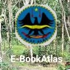
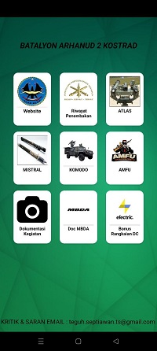

Kodular adalah platform tanpa kode yang memungkinkan pengguna membuat aplikasi Android secara visual tanpa perlu keahlian pemrograman. Dibangun di atas kerangka MIT App Inventor, Kodular menyediakan antarmuka drag-and-drop yang intuitif, memungkinkan pengguna menyusun aplikasi dengan komponen-komponen fungsional seperti tombol, teks, gambar, dan banyak lagi.
Kodular adalah website yang kita mengerjakan dari projeck kosong,
-Prinsip kerja dari Website ini ada hampir sama dengan windows Power poin, namun terdapat code untuk menjalakan perintah yang kita inginkan.
-Jenis code yang digunakan adalah BLOK CODE yang mana berbentuk puzzel yang kita susun sesui dengan perintah atau yang kita inginkan.
-Ada banyak tool yang dapat di gunakan di website ini, setiap tool memiliki code atau karakter yang berbeda beda.
-Aplikasi ini juga dapat di buat update data dengan Program yang di atur di BLOK CODE.
-Kita dapat mengatur tampilan fungsi Dll. mealui tool dan CODE yang tersedia.
-Website ini tidak code tipe CODE BLOK. contoh =>
Ababila kita ngin membuat tombol, kita buat balok , kemudian di code kita rubah mau di arahkan kemanatombol ini atau apa yang akan terjadi ketika tombol tertekan..
Untuk membuat aplikasi di Kodular Gratis, namun tool yang komlek dan lengkap serta untuk mendownload aplikasi atau projeck kita harus di paket Berbayar.
Aplikasi ini sebagai sarana pembelajaran untuk prajurit Arhanud 2 dalam latihan dan penguasaan Alutsista MISTRAL ATLAS.
aplikasi ini lebih spesifik dalam pmbelajaran karena sudah terdapat gambar dan vidio serta keterangan per item yang ada di senjata.
Contoh penerapan :
Dalam aplikasi ini terdiri dari beberapa tombol yang bisa di akses sesui dengan kebutuhan.
aplikasi ini sudah online. kami dapat merubah dan menaikan versi aplikasi sesuai kebutuhan dan pembaharuan.
kami membuat aplikasi ini menggunakan
: KODULAR

kontak kami:
Email: siharalapalap@gmail.com